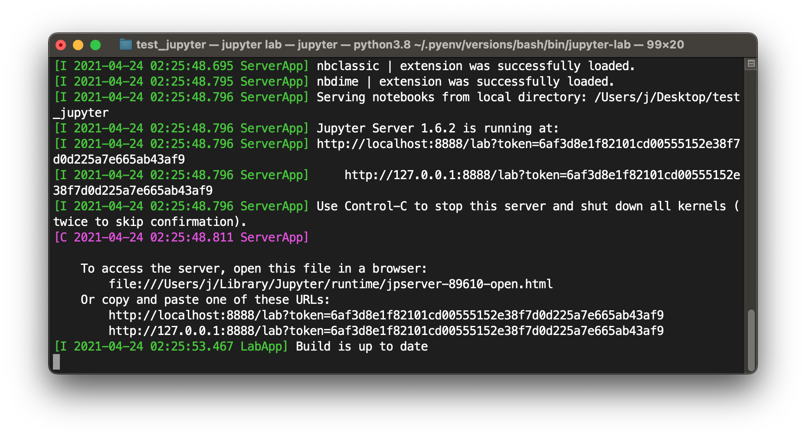

Instalación de Anaconda, Jupyter Lab y Kernel de Bash
Contenido
Instalación de Anaconda, Jupyter Lab y Kernel de Bash¶
Anaconda¶
En la documentación de Anaconda se puede ver que es muchas cosas: un administrador de paquetes, un administrador de ambientes de programación y también una distribución de Python y R. Anaconda es una herramienta muy útil que en sus inicios tuvo el propósito de proveer herramientas de ciencia de datos a usuarios de software open source. Hoy en día Anaconda se usa en muchos tipos de aplicaciones, ya que el software open source no tiene límite de aplicación. Además hay variaciones de Anaconda que son comerciales.
En este taller necesitamos Anaconda porque vamos a trabajar con Jupyter Notebooks, una herramienta habilitada a través del intérprete de Python, un lenguaje de programación hermoso y muy popular hoy en día. Anaconda es una herramienta conveniente para instalar Python en nuestro computador si somos usuarios sin experiencia. La curva de aprendizaje de los ambientes de programación en Anaconda es un poco más baja que la de Python. Además, la instalación de Anaconda es bastante estándar y funciona bien en todos los sistemas operativos. Es un buen punto de partida para manejar usuarios con diferente experiencia en computación.
Anaconda crea ambientes para instalar paquetes con los que podamos trabajar. Por paquetes se entiende a archivos binarios o programas compilados que se pueden ejecutar, o también son librerías con clases y funciones específicas. Por ambiente de programación se entiende un espacio de memoria del computador dedicado específicamente para la instalación de varios paquetes con el propósito de encapsular versiones específicas del software instalado. A veces, al programar, es necesario tener un mismo software en varias versiones (i.e. release 1.1, release 1.2, release 1.3, …). El software open source se caracteriza por evolucionar rápidamente, ya que todos los usuarios son potenciales editores del software y siempre hay actualizaciones. Es muy común que, al no trabajar con ambientes de programación, cuando un usuario actualiza el software, los paquetes tienen conflictos de dependencias. Esto pasa porque las versiones actualizadas de los paquetes pueden tener cambios drásticos que pueden dañar el código del usuario. Por esta razón, para este taller vamos a instalar Anaconda pero además crearemos un ambiente específico que nos sirva solamente para el taller. Así, en el futuro, para cada uno de tus proyectos, es altamente recomendable que dediques un ambiente exclusivo y evites conflictos de dependencia de software.
Anaconda tiene un administrador de ambientes de programación y paquetes llamado conda. Se lo usa por línea de comando. Lo usaremos para crear los ambientes e instalar los paquetes necesarios para este taller.
Python y Jupyter¶
Python es un lenguaje de programación interpretado construido en C, uno de los lenguajes más importantes en el mundo de la programación. Python es muy versátil y tiene herramientas muy poderosas para programadores. Project Jupyter es un proyecto que se dedica a mantener paquetes para programación interactiva llamados jupyter lab, jupyter notebooks, voila, entre otros. En este taller usaremos jupyter lab porque es lo que más se acerca a un Integrated Development Environment (IDE). Esta herramienta será súper útil para que puedas hacer los deberes y entregarlos de una manera muy ordenada y entendible.
jupyter lab puede trabajar con varios lenguajes de programación mediante kernels, que son paquetes diseñados para que los usuarios de jupyter lab puedan no solamente programar en Python, sino también en C, Perl, Ruby, Julia, Bash o varias otras opciones.
Los archivos sobre los que trabajaremos son notebooks con extensión .ipynb. Lo más importante de los notebooks es que se puede mezclar código con anotaciones como texto, imágenes, instrucciones, fórmulas matemáticas, entre otras. Esta maravillosa cualidad está habilitada por Markdown, un lenguaje similar a HTML que permite. A los usuarios editar texto con estilo sin necesidad de que sepan programación web. Todo este libro está hecho con jupyter books, otra herramienta de Jupyter Project, y usamos Markdown extensivamente. Aquí hay algunos snippets de código que pueden usar para editar las celdas Markdown en sus jupyter notebooks (https://jupyterbook.org/reference/cheatsheet.html). Pronto veremos ejemplos concretos de uso de jupyter notebooks y Markdown.
Instalación¶
Para instalar Anaconda pueden revisar los requisitos específicos para su sistema operativo en la página oficial https://www.anaconda.com/products/individual. El procedimiento general que vamos a usar es: crear un ambiente usando conda e instalar jupyter lab y el kernell de Bash en el ambiente creado. Debes por favor descargar el archivo Anaconda3-2020.11-Linux-x86_64.sh desde https://www.anaconda.com/products/individual. Yo lo descargué en mi carpeta de descargas ~/Downloads/. Para que puedas replicar el siguiente proceso de instalación, coloca el archivo en la misma carpeta. Ahora, abre Terminal y sigue estos pasos.
Actualizar módulos en Linux (En MacOS no es necesario).
$ sudo apt update
Comprobar la integridad del archivo de instalación. Este comando va a arrojar un número que es un código hash que se puede comparar con el oficial emitido por Anaconda en https://docs.anaconda.com/anaconda/install/hashes/.
$ sha256sum ~/Downloads/Anaconda3-2020.11-Linux-x86_64.sh
Empezar la instalación. Aceptamos todas las condiciones de instalación hasta que salga el mensaje
Thank you for installing Anaconda 3!.$ bash ~/Downloads/Anaconda3-2020.11-Linux-x86_64.sh
Ahora, puedes actualizar Terminal al abrir una nueva ventana, pero si no deseas cerrar la ventana puedes leer el archivo
~/bashsc, donde se guardan cambios importantes sobre cómo la Terminal trabaja. El instalador de Anaconda debí haber hecho cambios en este archivo y Bash debe saberlo para que puedas llamar acondadesde Terminal.$ source ~/.bashrcVerificar la instalación de Anaconda. Vas a ver entre paréntesis en la línea del prompt del Terminal está escrito
(base). En mi computador es así(base) ju@JU:~$. Puede que sea diferente si tienes otra configuración visual de tu shell. Esto indica que la shell tiene activa la versión de Python que vino con su versión de Anaconda, la versión «base». Esto causa que siempre esté disponible primero esta versión de Python en Terminal, por default.$ conda info
En caso de que no quisieran esto porque tienen más versiones de Python instaladas en su computador pueden usar el siguiente comando. Yo si lo usé porque tengo una versión de Python y no quiero dañar mis configuraciones. Si nunca has instalado Python antes no debes preocuparte.
$ conda config --set auto_activate_base False
Crear un ambiente de nombre
bash. Ese es el nombre que escogí para el ambiente porque ahí solo planeo tener cosas relacionadas a Bash, pero puedes darle otro nombre si gustas. Es importante indicar acondala versión de Python con la que vas a instalar los paquetes porque al dejar vacío ese campo automáticamente se crea un ambiente para Python 2.7, pero esta versión está descontinuada. Usé la versión Python 3.8 porque, aunque no es la más reciente, es muy buena y estamos seguros de que no va a fallar por nuevas actualizaciones.$ conda create --name bash python=3.8
Ver todos los ambientes creados. Debería estar en la lista
basho con el nombre que le hayas puesto.$ conda env list
Ahora vamos a acceder a nuestra carpeta para el taller. Usa el siguiente comando
$ cd ~/taller_unixActiva el ambiente
bashdentro de la carpeta que acabamos de crear. Para desactivar el ambiente dentro de la carpeta que creamos solo basta con$ conda deactivate. Lo importante de usar amientes de Python es que se modulariza el uso del software. Es importante porque ya que Python es un lenguaje de programación open source, siempre hay actualizaciones al software y a veces es necesario usar una versión no tan actualizada. Así, cada ambiente contiene lo estrictamente necesario para algún proyecto en particular y se evita dañar los proyectos por conflictos de versiones. Podríamos no haber creado un ambiente para instalar todo directamente en el ambiente base. En mi experiencia es mejor siempre crear un nuevo ambiente para cada proyecto y evitar topar el ambiente base porque así se evitan conflictos que pueden ser complicados de resolver debido a dependencias.$ conda activate bash
Instalar Jupyter Lab, una versión moderna de jupyter notebooks que se parece más a un IDE. El comando -n bash especifica que vamos a instalar el paquete de jupyterlab en el ambiente que creamos antes. El comando -c conda-forge indica de qué channel conda va a obtener el paquete jupyterlab. En este caso es conda-forge, como se especifica en https://jupyter.org/install. Daba lo mismo usar el comando
$ conda install --name bash --channel conda-forge jupyterlab.$ conda install -n bash -c conda-forge jupyterlab
Instalar el kernel de Bash en el ambiente que creamos, como se indica en https://anaconda.org/conda-forge/bash_kernel
$ conda install -n bash -c conda-forge bash_kernel
Llamar a
Jupyter Labdentro de la carpeta donde hayan activado el ambiente en donde instalaron jupyter. También pueden intentar$ jupyter notebook. Se va a abrir una ventana de tu explorador web predeterminado.$ jupyter lab
Al activar Jupyter Lab, la terminal lucirá de esta manera:
{kind=link}
Aviso
¡Nunca cierres la ventana de Terminal hasta que termines de trabajar en Jupyter Lab! Si cierras se puede dañar tu progreso.
Es claro que, en esta captura de pantalla, hay una dirección de servidor y 2 URLs. Es posible usar cualesquiera de estos para abrir una pestaña de Jupyter Lab y acceder al editor de texto.
file:///Users/j/Library/Jupyter/runtime/jpserver-89610-open.htmlhttp://localhost:8888/lab?token=6af3d8e1f82101cd00555152e38f7d0d225a7e665ab43af9http://127.0.0.1:8888/lab?token=6af3d8e1f82101cd00555152e38f7d0d225a7e665ab43af9
Jupyter Lab aparecerá en una pestaña del explorador así:

Hay varios iconos en el lado derecho de esta captura de pantalla. Estos representan los kernels de Jupyter Lab instalados en la computadora. Hay más que solo el kernel de Bash, pero eso no importa. En el futuro has de instalar el kernel que quieras de acuerdo a tus necesidades.
Para salir de Jupyter Lab debes seleccionar File → Shut Down.

Ahora ya podemos crear jupyter notebooks.